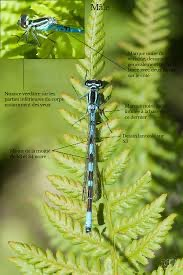

Zones humides et végétation aquatique
L’Agrion à fer de lance vit principalement dans les zones humides, les étangs et les mares calmes riches en végétation aquatique. Ces environnements fournissent non[...]
Importance écologique
Cette espèce joue un rôle crucial dans l’équilibre des écosystèmes aquatiques. En tant que prédateur d’insectes plus petits, il contribue à la régulation des p[...]

Principales menaces
L’Agrion à fer de lance fait face à de nombreuses menaces, notamment la destruction des zones humides, la pollution des eaux et le changement climatique. Ces facteurs ent[...]